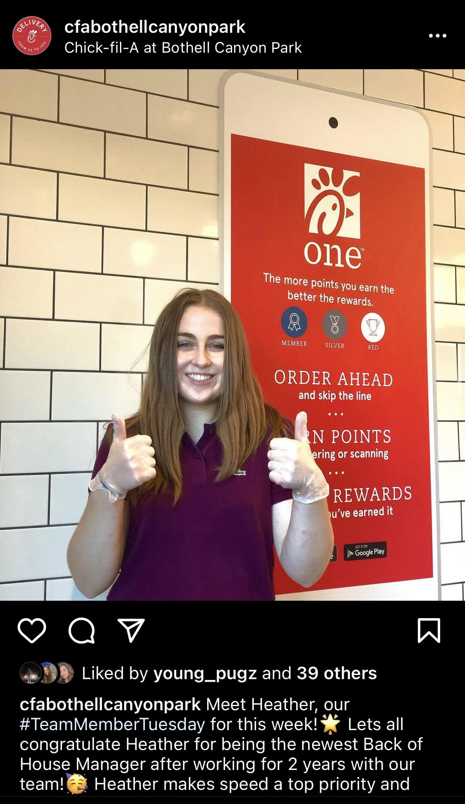

Bottom of Page
Education
- Brigham Young University
- BS Information Systems Management (2021-2024)
- Music Minor Violin Performance (2021-2024
- MISM Masters of Information Systems Managment (2024-2026)
- North Creek High School
- HS Diploma (2017-2021)
- 3.9 GPA
Experience
- BYU Engineering Student Advisor
- Experience working in administration in order to search through student databases, analyze major requirements, and ultimately progress students toward graduation.
- Chick-fil-A Manager
- Employed 2019-Current with background working 40-6o hour weeks running shifts, as well as managing and training a team.
- Experience using Management Information Systems to observe patterns and analyze data in order to make educated business decisions.
- Private Violin Teacher
- Self-owned business, instructing 40+ music students from 2017-2021 providing exemplary teaching and performance opportunities.
- Developed Entrepreneurial skills including, marketing, time management, data analysis, and communication skills.

Skills
- Technical Skills
- SQL, JavaScript, and C++
- Data Security, Analytics, and Privacy
- Web Development (HTML CSS)
- Knowledge of VBA Excel Automation and Solver
- Tableau Experience
- Database Modeling and Design
- Marketing and Digital Marketing Abilities
- Other Skills
- Training Experience
- Administrative Skills
- Problem Solving
- Teamwork Abilities
Music Experience
BYU music department audition:- Cascade Youth Symphony Orchestra 2019-2021
- 2020 Concerto Winner
- Bothell Stake Symphony Orchestra 2017-2021
- Washington All-State Symphony Orchestra 2018-2021
- North Creek Chamber Orchestra 2017-2021
- BYU Summer Music Festival and Musicians Institute 2020
- Performed first movement of Barber Violin Concerto in masterclass with Professor Alexander Woods
- Seattle Young Artists Competition 2020
- State Solo and Ensemble Festival 2019-2020
- Ranked first in large string ensemble category both years
- Regional Solo and Ensemble Festival 2017-2020
- Received two 1+, eight 1, four 1- in various competitions